1016A20 SINGLE TAPPET COVER -R.R AND REPLACE GASKET
- Path
- Procedures > 10 ENGINE > 1016 CYLINDER HEAD/S > 1016A TAPPET COVERS > 1016A20 SINGLE TAPPET COVER -R.R AND REPLACE GASKET
- Kind
- repair procedure (removal / refitting; the operation number is the code)
- Applies to
- engines: 1.8, 2.2, 1.9 JTD 8v; all production periods
- Interactive page
- https://sloeber94.github.io/elrnDB-fCrm/en/#/194000246
Applies to: engines: 2.2; all production periods
 Removing
Removing
 Refitting
Refitting- Make sure that the ignition key is in the OFF position, then disconnect the battery terminal (-).
Description | Connector | |
|---|---|---|
- | Battery |
1. Remove the sound insulation cover fastened to the engine by three pins.
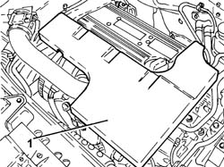
Applies to: engines: 2.2; all production periods
1. Loosen the band and disconnect the engine oil vapour recovery pipe from the cylinder head cover.
2. Loosen the bands and remove the air supply hose from the air flow meter to the throttle casing.
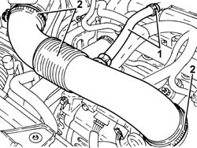
Applies to: engines: 2.2; all production periods
1. Connect the tool to the bleed valve on the fuel supply pipe and discharge the fuel pressure.
Tool | Description | Function | Validity |
|---|---|---|---|
2000002900 | Breather connector | Fuel system pressure drainage | 1.8 2.2 |
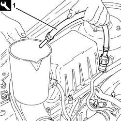
Applies to: engines: 2.2; all production periods
1. Undo the connector (1a), disconnect the fuel supply pipe (1b), fuel manifold pipe side and move it to the side.
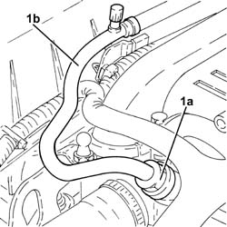
Applies to: engines: 2.2; all production periods
1. Disconnect the electrical connection from the ignition coil module.
Description | Connector | |
|---|---|---|
1 | Ignition coil | See A030 IGNITION COIL |
2. Undo the bolts (2a) and remove the ignition coils module (2b).
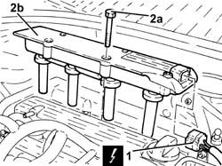
Applies to: engines: 2.2; all production periods
1. Undo the nut (1a), loosen the bands and remove the engine coolant return pipe to the supply reservoir (1b).
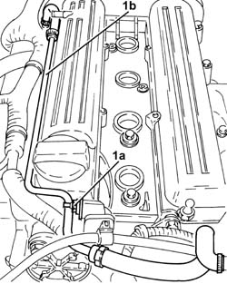
Applies to: engines: 2.2; all production periods
1. Undo the bolts securing the timing side engine wiring brackets.
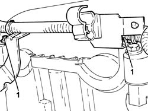
Applies to: engines: 2.2; all production periods
1. Undo the bolts securing the timing side engine wiring brackets.
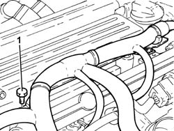
Applies to: engines: 2.2; all production periods
1. Release the gearbox side engine wiring mounting bracket from the fastenings.
2. Move the engine wiring to the side.
3. Disconnect the electrical connection for the radio interference condenser.
Description | Connector | |
|---|---|---|
3 | Interference filter |
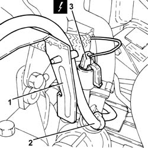
Applies to: engines: 2.2; all production periods
1. Undo the nut (1a) and disconnect the earth cable loom (1b) from the tappet cover.
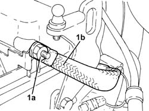
Applies to: engines: 2.2; all production periods
1. Undo the bolts (1a) and remove the cam cover (1b).
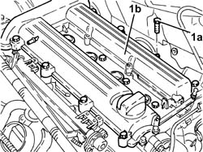
Applies to: engines: 2.2; all production periods
Refitting
Removing1. Place the tappet cover (1a) in its housing and secure it tightening the bolts (1b) to the recommended torque.
Component | Fastening | dia | Value (daNm) | Validity |
|---|---|---|---|---|
Tappet cover | Bolt | M6 x 1 | (cylinder head side) 0.9 | 2.2 |
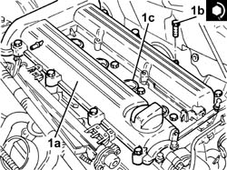
Applies to: engines: 2.2; all production periods
- Connect the earth cable loom to the tappet cover and secure it using the nut.
- Connect the electrical connection for the radio interference condenser.
- Refit the engine wiring
- Fasten the gearbox side engine wiring mounting bracket.
- Fasten the tappet cover side engine wiring brackets using the bolts.
- Fasten the timing side engine wiring brackets using the bolts.
- Place the coolant return pipe to the engine coolant reservoir in position and tighten the bands and the nut.
1. Place the ignition coil module (1a) in its housing and secure it tightening the bolts (1b) to the recommended torque.
Component | Fastening | dia | Value (daNm) | Validity |
|---|---|---|---|---|
Ignition coil module | Bolt | M6 x 1 | (tappet cover side) 0.9 | 2.2 |
2. Connect the electrical connection to the ignition coil module.
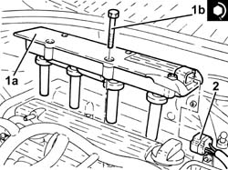
Applies to: engines: 2.2; all production periods
1. Place the fuel supply pipe (1a) in its housing, connect it and tighten the connector (1b) to the recommended torque.
Component | Fastening | dia | Value (daNm) | Validity |
|---|---|---|---|---|
Front fuel supply pipe | Connector | - | (fuel manifold side) 1.0 | 2.2 |
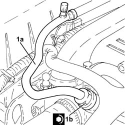
Applies to: engines: 2.2; all production periods
- Place the air supply hose from the air flow meter to the throttle casing back in its housing and secure it using the bands.
- Connect the engine oil vapour recovery pipe to the cylinder head cover and secure it using the band.
- Place the sound insulation cover back in its housing and secure it to the engine using the three pins.
- Connect the negative battery terminal.
- Remove the vehicle from the lift.
Applies to: engines: 1.9 JTD 8v; all production periods
Removing
RefittingOp. 1016A10 SOUND-PROOFING COVER - R.R
- Loosen the colllars and disconnec both oil vapour pipes from the cam cover.
- Undo the retaining bolts.
- Remove the tappet cover and gasket.
Applies to: engines: 1.9 JTD 8v; all production periods
Refitting
Removing- Place the tappet cover complete with gasket back in its housing and secure it by tightening the bolts to the recommended torque.
Component | Fastening | dia | Value (daNm) | Validity |
|---|---|---|---|---|
Tappet cover | Bolt | M6 | (cylinder head side) 0.8 - 1.0 | 1.9 JTD 8v |
- Connect the oil vapour pipes to the cam cover and tighten the bands.
Applies to: engines: 1.8; all production periods
Removing
RefittingOp. 1016A40 IGNITION COIL COVER ON CYLINDER HEAD - R+R
Op. 5510C14 IGNITION COIL/S - R.R.
1. Lift up the retaining clip and disconnect the engine oil vapour pipe from the tappet cover.
2. Disconnect the ducts for the engine wiring from the tappet cover.
3. Undo the fixing bolts and remove the tappet cover from the cylinder head.
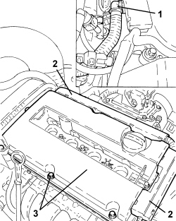
Applies to: engines: 1.8; all production periods
Refitting
Removing- Place the tappet cover in position and secure it to the cylinder head tightening the bolts to the recommended torque.
Component | Fastening | dia | Value (daNm) | Validity |
|---|---|---|---|---|
Tappet cover | Bolt | - | 0.8 | 1.8 |
- Connect the ducts for the engine wiring to the tappet cover.
- Connect the engine oil vapour pipe to the tappet cover using the retaining clip.
Topics linked from this page (5)
- 1016A10 SOUND-PROOFING COVER - R.R
- 1016A40 IGNITION COIL COVER ON CYLINDER HEAD - R+R
- 5510C14 IGNITION COIL/S - R.R.
- A001 BATTERY
- P087 NOISE FILTER